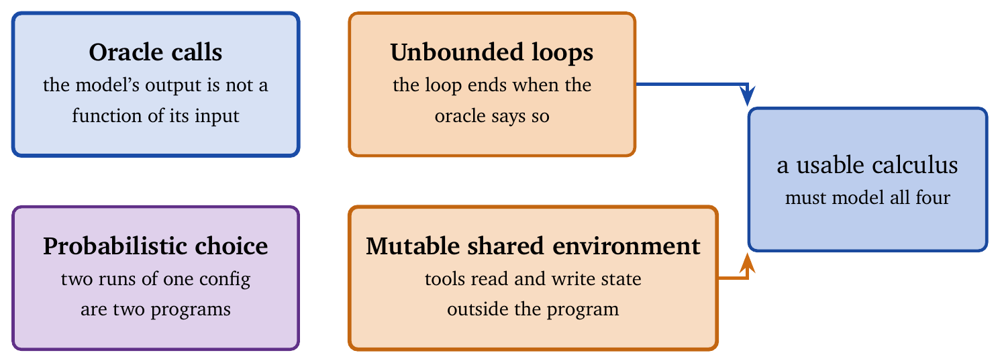
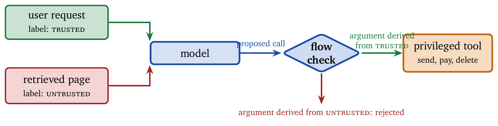

Consider a question that most teams cannot currently answer about their own agent: given its configuration, will it terminate? The question concerns the configuration itself rather than the agent’s behavior on the cases that happened to be tried. The usual answer is a step limit, which is an admission that the question was never asked. A step limit says nothing about whether the agent halts; it says when to stop waiting.
Chapter 1 defined the vocabulary operationally, in terms of what a system must track and enforce. That is sufficient to build with and insufficient to prove anything. This chapter covers the formal side, which arrived late to agent work and then arrived quickly. Within the past year the field has acquired typed calculi for agent composition, process-calculus semantics for tool protocols, information-flow calculi for injection resistance, and contract frameworks that make resource bounds part of a specification rather than a runtime hope.
The practical return is narrower than the theory suggests and still worth having. Formalization yields lint rules that catch structural errors before deployment, a precise statement of what a protocol translation loses, and a way to state what an agent is permitted to consume that a scheduler can check.
An ordinary program has a semantics because every construct has defined behavior. Agent frameworks break this in four places, shown in Figure 4.1.

Oracle calls. A model invocation returns an unpredictable value from an enormous space. Its behavior is not a function of its inputs in any usable sense.
Unbounded loops. The ReAct loop runs until the agent decides to stop, and the agent that decides is the same oracle. Termination is not structural.
Probabilistic choice. Sampling makes two runs of the same configuration different programs in the operational sense.
Mutable shared environment. Tools read and write state outside the program, concurrently with other agents.
Any calculus for agents has to model all four rather than assume them away. That is the bar the recent work clears.
The most direct result extends the simply typed lambda calculus with exactly these four features. The \(\lambda_A\) calculus adds oracle calls, bounded fixpoints to model the ReAct loop, probabilistic choice, and mutable environments [2]. A bounded fixpoint is a recursive definition that carries an explicit iteration limit, which is how the calculus represents a loop that must stop. On this basis it proves type safety, meaning that a well-typed configuration cannot reach a stuck state, together with termination of the bounded loops.
The development is mechanized in Coq, a proof assistant that checks each step by machine. This matters because hand proofs about probabilistic effects and mutable state are exactly the kind that appear correct and are not.
Two consequences should be kept separate. The theoretical consequence is that agent composition admits a semantics at all: given a configuration, one can ask whether it is well formed and whether its loops terminate, and obtain an answer that does not depend on running it. The practical consequence is that lint rules follow from the operational semantics rather than from taste. A rule derived in this way carries a soundness argument, so a warning means something specific. Applied to a corpus of real agent configurations, such rules catch structural errors that no amount of prompt review would surface, because they are properties of the wiring rather than of the text.
The limitation is the bounded fixpoint. Termination is proved because the loop is bounded, which returns us to the step limit with a better justification. What the calculus adds is that the bound is now part of the type, so a configuration that omits it fails to typecheck instead of running until someone notices.
Tool protocols are where agents meet the outside world, and the field converged on a small number of them without anyone checking whether they express the same things.
A process calculus is a formal language for describing concurrent systems that communicate over channels, together with rules for when two such systems count as equivalent. Applying one to two dominant approaches, Schema-Guided Dialogue and the Model Context Protocol, proves them structurally bisimilar under an explicit mapping [6]. Bisimilar means that, for practical purposes, each can simulate the other, so a system built on one is not architecturally committed in the way it might appear.
The more useful half of the result concerns the reverse direction. The inverse mapping is partial and lossy, which means the translation back discards structure. A team building a bridge between protocols can read off precisely what falls through, and it is better to learn that from a proof than from an incident.
A related line formalizes agent communication itself under resource constraints, producing a calculus that keeps the semantic richness of older agent communication languages while remaining tractable for constrained deployment [7]. The recurring theme is that expressiveness and cost are formally related, which is the same trade that Chapter 5 makes empirically.
The most consequential formal result for practitioners concerns prompt injection.
Chapter 12 argues that the defense against injection is structural: trusted and untrusted content are kept apart so that data cannot become instruction. That argument can now be made precisely. Information-flow control is the discipline of labelling data by its origin and restricting how labels may propagate, so that content from an untrusted source cannot reach a position where it is obeyed. Figure 4.2 shows the idea. The LLMbda calculus is an untyped call-by-value lambda calculus that models agents, conversations, and information flow on this basis, giving a formal account of provenance-based defenses including the dual-LLM pattern [3].

The value of the calculus lies in what it exposes about existing defenses. Flow tracking is easy to implement incorrectly, deliberate relaxations are hard to audit, and the dual-LLM pattern is usually hard-wired into an architecture rather than derived. A calculus makes each of these a statement one can check. A relaxation becomes an explicit rule in the system rather than a comment in a code review.
The reframing is the thing to retain. Injection resistance is an information-flow property, and information flow is a well-studied area with sixty years of results. Treating injection as a prompt-engineering problem discards all of them.
Traditional software specifies behavior with contracts: preconditions, postconditions, invariants, and types. Agents typically specify behavior with a paragraph of English in a system prompt. The gap between the two is where governance failures originate. Two frameworks close it from different directions.
Behavioral contracts. An agent behavioral contract is a tuple of preconditions, invariants, governance policies, and recovery mechanisms, all enforceable at runtime rather than merely documentary [1]. Because agent behavior is stochastic, satisfaction is defined probabilistically with explicit tolerance parameters. This is the honest formulation; a contract that demanded deterministic satisfaction would be unsatisfiable by construction and therefore useless.
Resource contracts. The older Contract Net Protocol coordinated multi-agent work through contracts for task allocation. Modern agent protocols standardize connectivity and say nothing about consumption. Agent Contracts extend the metaphor to resource-bounded execution, unifying input and output specifications, multi-dimensional resource constraints, temporal boundaries, and success criteria under one lifecycle [4].
The second framework connects directly to Chapter 6. A budget enforced by the policy is a good design. A budget expressed as a contract is a budget that a scheduler, a marketplace, or a counterparty can also check, which is what is needed once agents consume resources on behalf of parties who are not present.
Formal verification has begun to reach the packaging layer as well. Work on agent skill manifests defines a verification lattice running from unverified through declared and tested to mechanically checked, and supplies methods for the top level [5]. Given the supply-chain exposure described in Chapter 12, a mechanically checkable manifest is worth more than a signature from a publisher nobody has audited.
It is worth being precise about the return.
Formalization buys structural error detection. Configuration errors that are properties of the wiring are caught statically. This is real, inexpensive, and underused. It buys precise interface claims: bisimilarity results say when two protocols are interchangeable and exactly what a translation loses. It buys auditable relaxations: an information-flow calculus turns “we allow this one exception” into a rule with a name. And it buys checkable resource claims: a resource contract can be enforced by a party other than the agent.
Formalization does not buy correctness of model outputs. No calculus makes an oracle call return the right answer. Every result in this chapter treats the model as an oracle and reasons about the structure around it, which is the posture the rest of the book takes as well. And it does not remove the need for runtime enforcement. Type safety is a property of configurations, and adversaries are not configurations; Chapters 9 and 13 apply in full.
The honest summary is that formalization moves a class of failures from runtime to compile time, and that class is smaller than the theory papers imply and larger than most teams currently catch.
Agent frameworks resisted formalization for four specific reasons: oracle calls, unbounded loops, probabilistic choice, and mutable shared environments. Recent calculi model all four rather than assuming them away.
Typed composition gives well-formedness and termination as checkable properties, with lint rules derived from the operational semantics instead of from convention. Process-calculus treatment of tool protocols establishes when two protocols are interchangeable and what a translation between them loses. Information-flow calculi restate injection resistance as a provenance property, which connects it to a mature body of work and makes deliberate relaxations auditable.
Contracts supply the specification layer that agent frameworks lack. Behavioral contracts carry preconditions, invariants, governance, and recovery with probabilistic satisfaction. Resource contracts make consumption bounds externally checkable, which is what Chapter 6 requires once budgets cross an organizational boundary.
None of this makes a model correct. All of it makes the structure around the model something one can reason about before it runs.
A step limit proves termination. It bounds waiting. A bounded fixpoint in a typed calculus proves termination because the bound is part of the type, and a configuration missing it fails to typecheck [2].
Two protocols that look similar are interchangeable. They may be bisimilar in one direction and lossy in the other. The direction of translation matters [6].
Injection is a prompting problem. It is an information-flow problem, and treating it otherwise discards a mature literature [3].
A contract must be satisfied deterministically. Agent behavior is stochastic, so useful contracts carry explicit probabilistic tolerances [1].
The model is the thing to formalize. The oracle is the intractable part. Every result in this chapter formalizes what surrounds the oracle.
Mechanization is optional. Proofs about probabilistic effects and mutable state are exactly where hand arguments fail. Prefer results that carry machine-checked developments.
Write down your agent’s main loop as a bounded fixpoint. State the bound explicitly and say what happens at the bound. If the answer is “it returns whatever it has,” say what type that value has and whether callers handle it.
Take two tool protocols your system speaks. Construct the mapping from one to the other and identify one piece of structure the reverse mapping loses. Compare your answer to the lossiness result in [6].
Express one injection defense in your system as an information-flow rule over provenance labels. Identify every deliberate relaxation and say who approved it.
Write a behavioral contract for one agent, giving preconditions, invariants, governance policies, and recovery. Choose the probabilistic tolerance and justify the number from the cost of violation rather than from convention.
Your agent consumes budget on behalf of a customer. Write the resource contract that a third party could check without trusting the agent, following [4]. State which terms a scheduler can enforce and which require post-hoc audit.
Argue for or against the claim that a mechanically checked skill manifest is worth more than a publisher signature, using the supply-chain threat model of Chapter 12.
The typed calculus for agent composition, including the Coq development and the derived lint tool, is [2]. Process-calculus semantics for tool protocols, with the bisimilarity result between Schema-Guided Dialogue and the Model Context Protocol, is [6]. Resource-constrained agent communication is formalized in [7].
The LLMbda calculus [3] builds on a long tradition of information-flow control; readers who want the background should start with the classical treatment of provenance and of noninterference, the property that untrusted inputs cannot influence trusted outputs, before reading the agent adaptation.
Behavioral contracts are introduced in [1], and resource-bounded agent contracts in [4], which explicitly positions itself against the Contract Net Protocol of 1980. Formal verification of agent skill manifests appears in [5].
Readers looking for the limits of runtime formal methods should read Chapter 13, which covers a coverage bound on monitor recall that constrains what any fixed-invariant runtime monitor can achieve.
Varun Pratap Bhardwaj. “Agent Behavioral Contracts: Formal Specification and Runtime Enforcement for Reliable Autonomous AI Agents.” arXiv:2602.22302, 2026.
Qin Liu. “$λ_A$: A Typed Lambda Calculus for LLM Agent Composition.” arXiv:2604.11767, 2026.
Zac Garby et al. “The LLMbda Calculus: AI Agents, Conversations, and Information Flow.” arXiv:2602.20064, 2026.
Qing Ye and Jing Tan. “Agent Contracts: A Formal Framework for Resource-Bounded Autonomous AI Systems.” arXiv:2601.08815, 2026.
Alfredo Metere. “Methods for Formal Verification of Agent Skills: Three Layers Toward a Mechanically Checkable Capability-Containment Proof.” arXiv:2605.23951, 2026.
Andreas Schlapbach. “Formal Semantics for Agentic Tool Protocols: A Process Calculus Approach.” arXiv:2603.24747, 2026.
Arnab Mallick and Indraveni Chebolu. “μACP: A Formal Calculus for Expressive, Resource-Constrained Agent Communication.” arXiv:2601.00219, 2026.